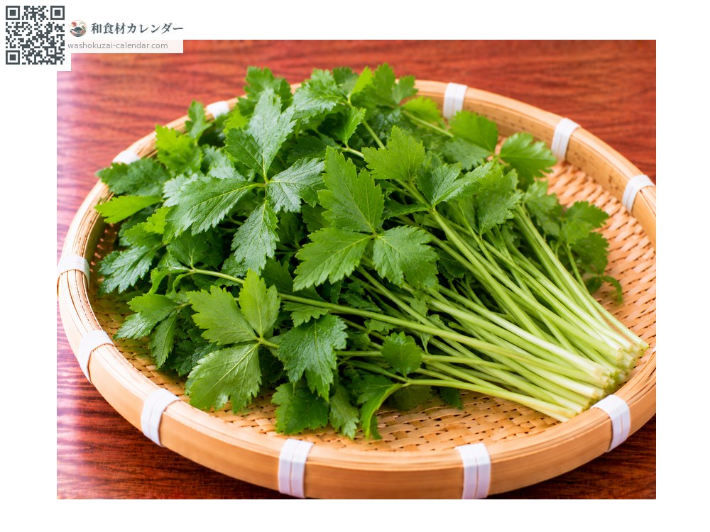
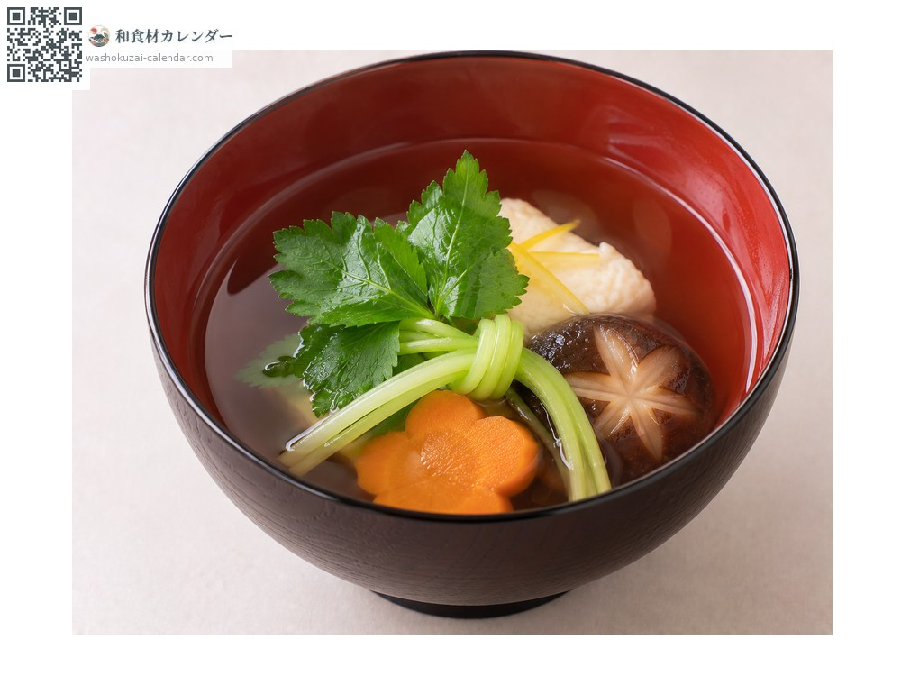
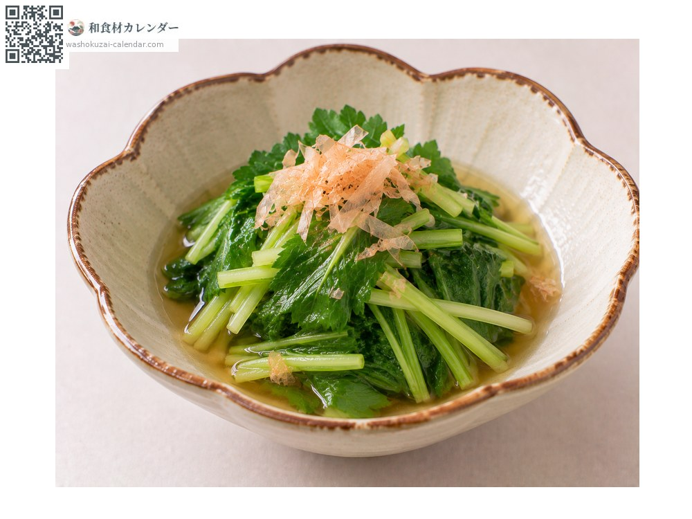
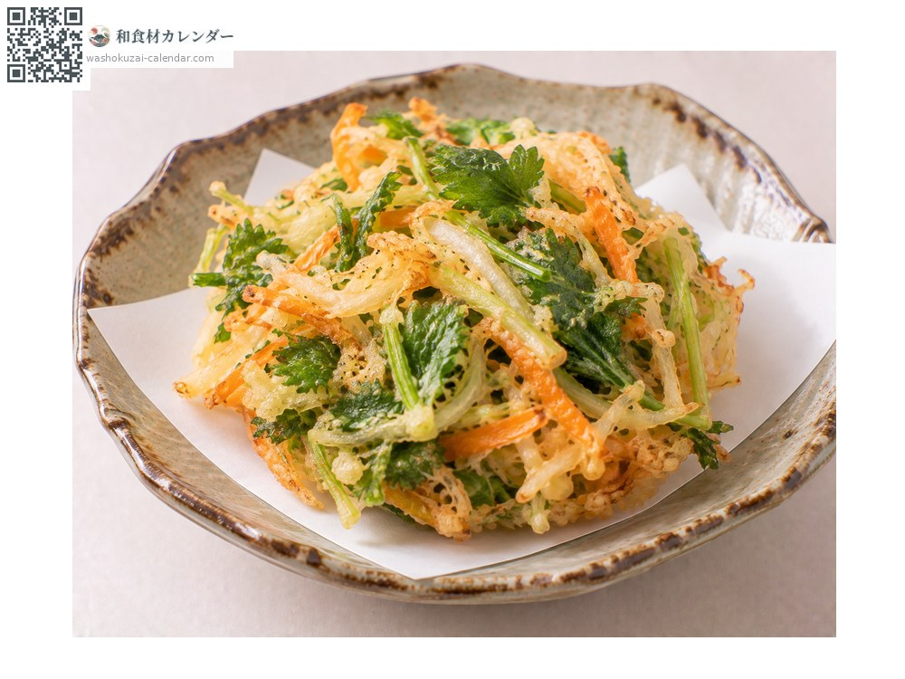
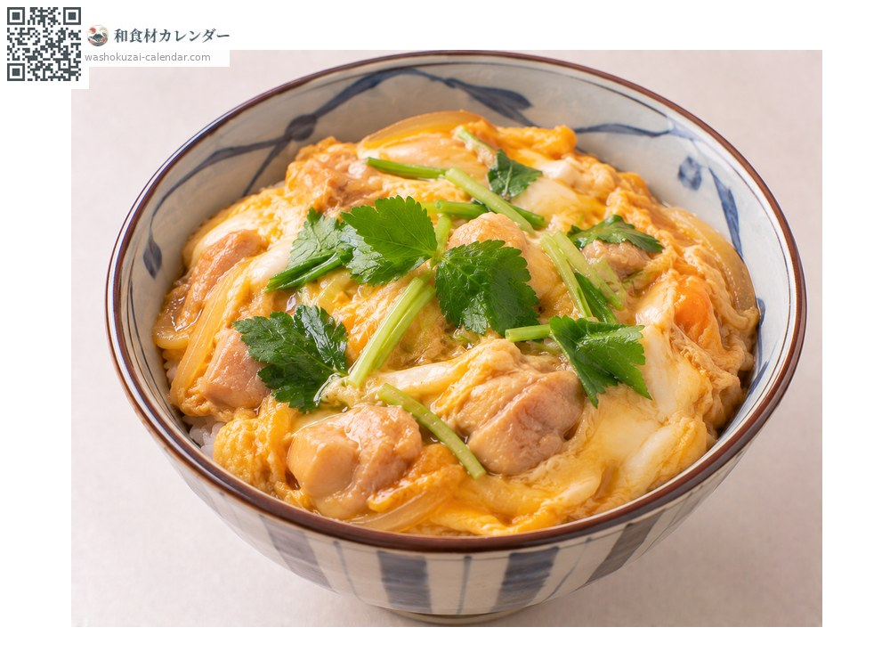

ผัก
ผักมิตสึบะ
三つ葉 みつば mitsuba
ชื่ออื่นmitsuba
อร่อยที่สุดในเดือน เม.ย., พ.ค.

ช่วงที่อร่อยที่สุด
ม.ค.
ก.พ.
มี.ค.
เม.ย.
พ.ค.
มิ.ย.
ก.ค.
ส.ค.
ก.ย.
ต.ค.
พ.ย.
ธ.ค.
ช่วงอร่อยที่สุดมีจำหน่าย
วิธีปรุง

ใส่ซุปใส
มัดเป็นปมวางในถ้วย เพิ่มกลิ่นและสีสัน

โอฮิตาชิ
ลวกเร็ว ๆ แล้วแช่น้ำดาชิ

คากิอาเกะ
สับแล้วทอดรวมกับวัตถุดิบอื่น กลิ่นจะหอมขึ้น

ราดไข่
โรยบนข้าวหน้าไก่ไข่ตอนท้าย
วิธีเลือก
ใบสดชื่น ก้านตรงไม่หัก กลิ่นแรง
วิธีเก็บรักษา
ไม่ทนความแห้ง แบบมีรากให้แช่น้ำในตู้เย็น ที่สับแล้วใช้ภายในวันเดียวกัน
แหล่งผลิตหลัก
เกร็ดน่ารู้
ชื่อมาจากการที่ใบแยกเป็นสามแฉก วิธีปลูกต่างกันทำให้ได้มิตสึบะรากติด มิตสึบะตัด และมิตสึบะเส้น ซึ่งใช้ต่างกัน เป็นหนึ่งในผักไม่กี่ชนิดที่มีถิ่นกำเนิดในญี่ปุ่น ถ้าโดนความร้อนนานกลิ่นจะหาย จึงใส่เป็นอย่างสุดท้าย